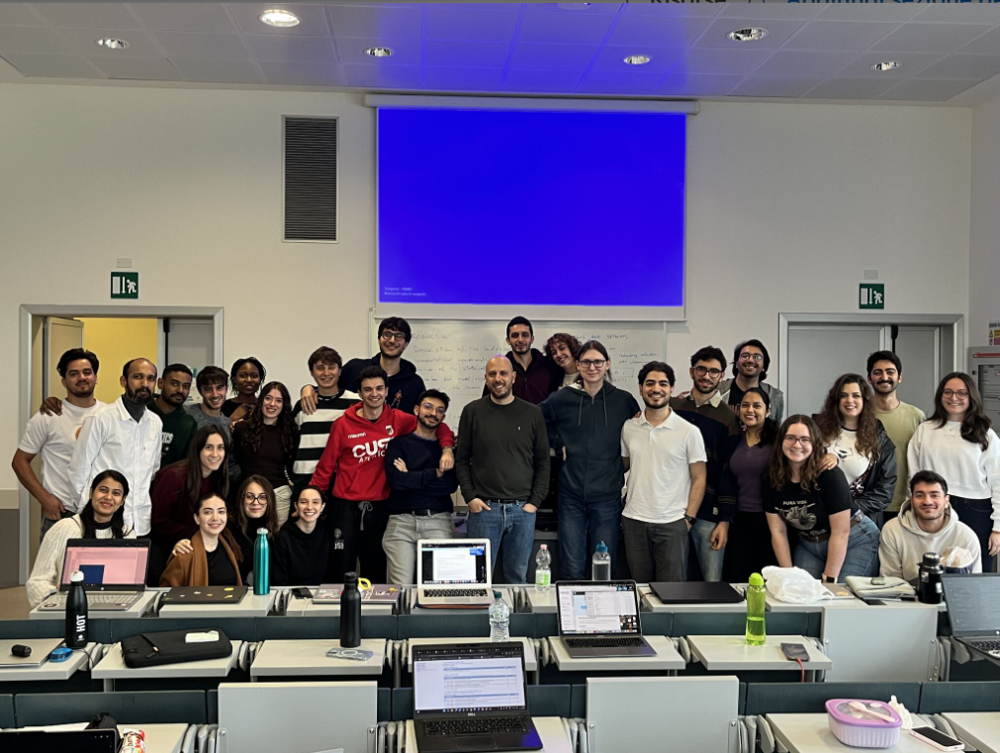
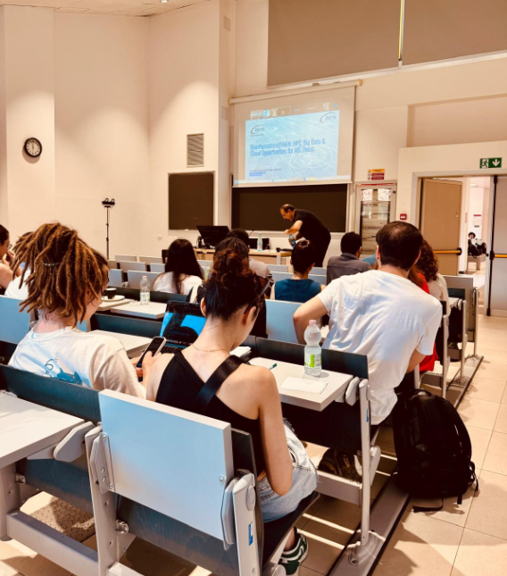
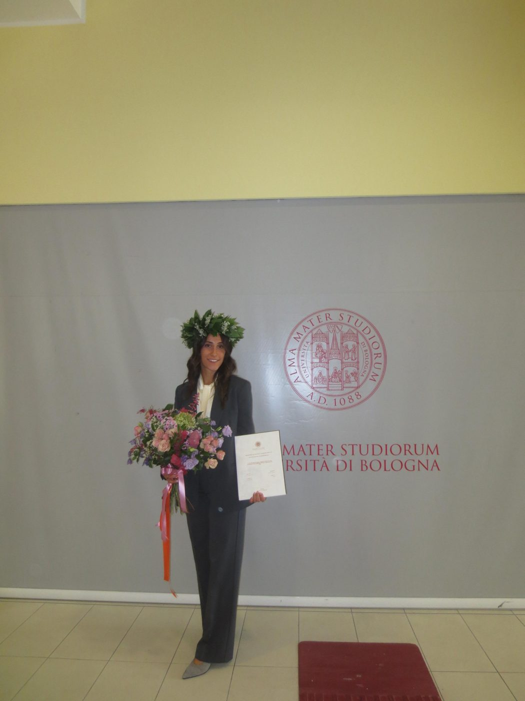

MSc in Bioinformatics
University of Bologna a 2nd-cycle (Master’s) degree program bridging life sciences with computational analysis, reproducible pipelines and data-driven interpretation.
University of Bologna a 2nd-cycle (Master’s) degree program bridging life sciences with computational analysis, reproducible pipelines and data-driven interpretation.
The MSc in Bioinformatics at the University of Bologna combines computational methods and life-science expertise to analyse biological data and produce interpretable results. The program emphasizes reproducible workflows, scientific reporting and collaboration in an international environment.
My MSc path focuses on computational methods for biological data analysis, with particular interest in genomics and transcriptomics, and in applying machine learning where it provides interpretable and biologically meaningful value.
Fragments from lectures, meetings and group work during the academic year. The program is also a unique opportunity to meet motivated people, including many international classmates and grow through shared projects and discussions.


The official Europass Diploma Supplement issued by the University of Bologna. It describes the programme, the learning outcomes and my full study record, in Italian and English.
Personal identification data are hidden in the online copy.

Course projects and personal work are available on my GitHub profile. They include reproducible workflows, reports and analyses on real biological datasets.